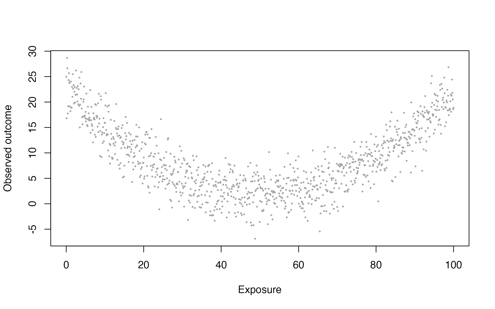
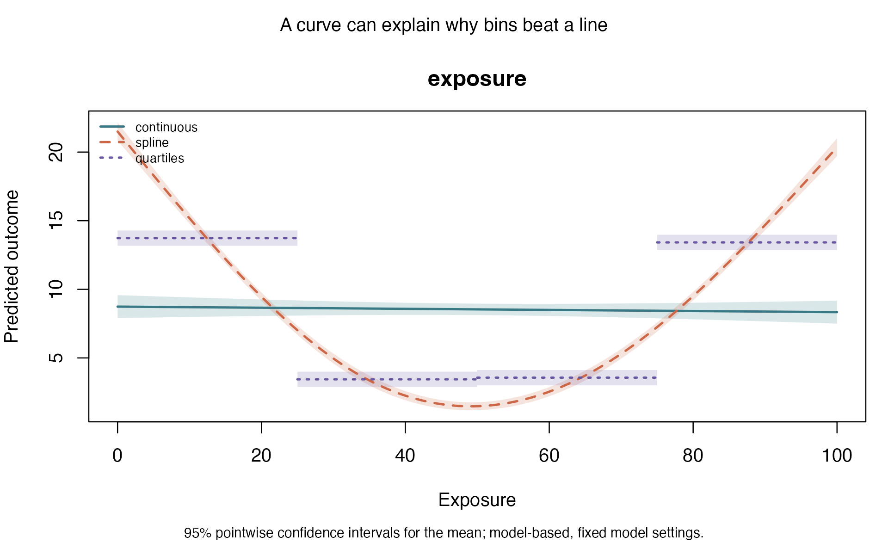
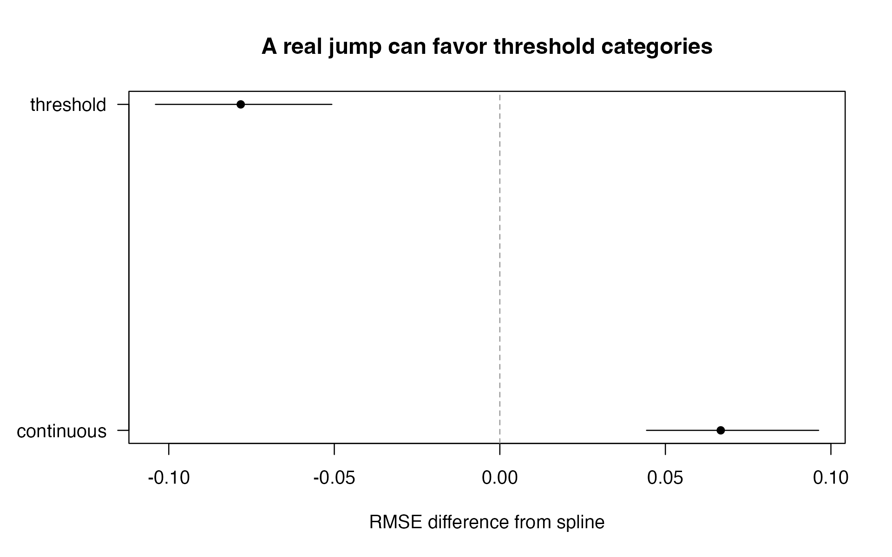

Compare bins with a flexible continuous model
Keith A. Preble
Source:vignettes/flexible-continuous.Rmd
flexible-continuous.RmdWhy add another model?
Bins can beat a straight line because the relationship is curved. That does not establish that categories are the best representation. A useful comparison includes a continuous model that can bend while keeping the original measurements.
A natural cubic spline fits connected smooth curves. Its knots are the locations where those curve pieces join. A knot is not a category boundary; values on either side remain part of a continuous fitted relationship. The curve becomes linear outside its outer boundary knots on the model’s link scale. In a logistic model that means the log-odds scale, not the probability scale. R spline documentation.
In binwise, adding spline_df = 3 includes
this comparator under the name spline. Three degrees of
freedom is a modest starting amount of flexibility. Larger values allow
more complex shapes and can overfit. It is not an automatic choice of
the best complexity. The original continuous model remains
the linear-term reference. For logistic models its terms are linear in
log-odds.
Start a fresh R session, load the package, and run these blocks in order. See the getting-started guide if you need help running code in RStudio.
1. Create a curved teaching example
We will reuse the existing exposure values and simulated random noise, but change the known expected outcome to a smooth U-shaped relationship. The original dataset remains unchanged.
curved <- binwise_smooth
noise <- curved$outcome - curved$expected_outcome
curved$expected_outcome <- 2 + .008 * (curved$exposure - 50)^2
curved$outcome <- curved$expected_outcome + noise
plot(curved$exposure, curved$outcome, pch = 16, cex = .4, col = "grey65",
xlab = "Exposure", ylab = "Observed outcome")
The outcome tends to be higher near both ends and lower in the
middle. The expected_outcome column is available only
because this is a simulation. Do not include that teaching aid as a
control when predicting the noisy outcome.
2. Fit the straight line, spline, and bins
quartiles <- bin_diagnose(curved, "exposure", bins = 4, warn = FALSE)
curved_fit <- bin_interact(
curved, outcome = "outcome", variables = "exposure",
schemes = list(quartiles = quartiles), spline_df = 3
)
plot(curved_fit, xlab = "Exposure", main = "A curve can explain why bins beat a line")
curved_fit$comparison
#> model n parameters AIC BIC training_score status delta_AIC
#> 1 continuous 1000 3 6659 6674 6.736 ok 0.0
#> 2 spline 1000 5 5068 5092 3.034 ok -1591.3
#> 3 quartiles 1000 5 5844 5869 4.473 ok -814.8The legend identifies three models. continuous fits a
straight line here. spline can follow the smooth change.
quartiles fits flat steps that discard variation inside
each interval. All models use the same observations.
Shading shows 95% pointwise confidence intervals for each fitted mean. It conditions on the specified model and complexity; it does not account for choosing the preferred degrees of freedom after viewing results. The bands are not prediction intervals for individual observations, and their overlap is not a test of whether two model shapes are equivalent.
Read the plain-language assessment and inspect the spline definition.
cat(paste(curved_fit$assessment, collapse = "\n\n"))
#> All models use the same 1000 observations; 0 rows were excluded for missing or nonfinite inputs. This assessment compares your supplied schemes with the continuous benchmark and does not choose bins for you.
#>
#> These models have no interaction. Comparisons concern the representation of the focal predictors with additive controls, if supplied.
#>
#> For the continuous benchmark, moving 'exposure' from 0 to 100 gives a decrease of 0.4014 outcome units. These are end-to-end predicted changes on the displayed grid, not per-unit effects or causal estimates; controls stay fixed.
#>
#> Natural spline comparator (3 degrees of freedom per focal variable). Compared with continuous, AIC is 1591 lower; BIC is 1581 lower; training RMSE is 3.702 lower. The largest absolute prediction difference on the default grid is 12.76 outcome units (exposure = 0; 107 of 107 grid rows comparable). Decide whether that change matters for your application. This model retains numeric variation within the fitted curves; it has no bin-group counts. Inspect joint support and validate predictions.
#>
#> Scheme 'quartiles'. Compared with continuous, AIC is 814.8 lower; BIC is 804.9 lower; training RMSE is 2.263 lower. The largest absolute prediction difference on the default grid is 5.197 outcome units (exposure just above 25; 107 of 107 grid rows comparable). Decide whether that change matters for your application. Its bin groups contain 250 to 250 observations; 0 groups are empty and 0 fall below your count screen (n < 20).
#>
#> The spline is a prespecified flexible continuous alternative, not an automatically tuned model. Beating the linear reference alone does not demonstrate an advantage over the spline.
#>
#> Scheme 'quartiles' compared with spline: AIC is 776.5 higher; BIC is 776.5 higher; training RMSE is 1.439 higher. These are in-sample comparisons; use bin_validate for held-out prediction.
#>
#> Lower AIC or BIC indicates a better fit-complexity tradeoff within this common sample and model family. Lower training error describes these fitted data only. These comparisons are not significance tests or validation on new observations.
#>
#> Binning treats values within a category alike, holding other predictors fixed. Consider it when the boundaries have a defensible meaning and the lost within-bin distinctions are acceptable. Lower AIC alone cannot establish a real threshold. A smooth nonlinear alternative may improve on the linear-term reference; any supplied spline is one such alternative, not every possible continuous model.
#>
#> Prediction differences refer only to the displayed grid with controls fixed, not the whole sample or every possible covariate combination. Group counts describe rows, not independent units, and do not establish joint support for continuous predictors.
#>
#> Confidence bands are pointwise and model-based with fixed model settings, including cutpoints and spline complexity. Their width or overlap does not validate the model shape or test differences between models. Bin selection and clustered dependence are not accounted for. No scheme is selected automatically.
curved_fit$spline_details
#> $exposure
#> $exposure$df
#> [1] 3
#>
#> $exposure$knots
#> [1] 33.33 66.67
#>
#> $exposure$boundary_knots
#> [1] 0 100
#>
#> $exposure$training_n
#> [1] 1000The assessment now includes each binned scheme’s fit comparison with
the spline. AIC, BIC, and training error still describe the fitted
sample. They do not replace the held-out comparison below.
spline_details records interior knots, boundary knots,
degrees of freedom, and the number of training observations.
3. Compare held-out predictions directly against the spline
curved_check <- bin_validate(
curved, outcome = "outcome", variables = "exposure",
schemes = list(quartiles = list(
exposure = list(probs = c(0, .25, .5, .75, 1))
)),
spline_df = 3, reference = "spline", folds = 5, seed = 12, reps = 199
)
curved_check$scores
#> model metric score lower upper
#> 1 spline RMSE 3.051 2.929 3.165
#> 2 continuous RMSE 6.759 6.496 6.990
#> 3 quartiles RMSE 4.505 4.312 4.694
#> 4 spline MAE 2.436 2.329 2.543
#> 5 continuous MAE 5.592 5.345 5.804
#> 6 quartiles MAE 3.577 3.414 3.744
plot(curved_check, metric = "RMSE",
main = "Positive differences mean worse predictions than the spline")The RMSE values are approximately 6.76 for the straight line, 4.50 for quartile bins, and 3.05 for the spline. Lower is better. The bins improve on the straight line, but the spline does considerably better than the bins. Here, the useful feature is curvature, and categorization loses information about it.
reference = "spline" changes which model is subtracted
when computing score differences. It does not change the fits, folds, or
observations scored. A negative difference favors a candidate over the
spline; a positive one favors the spline. The intervals are paired
bootstrap intervals for loss differences with predictions and folds
fixed. They do not cover all uncertainty from refitting or model
selection. Increase reps for a final analysis and check
interval stability.
The spline knots and quantile boundaries are estimated only from training observations in each fold. Held-out values reuse the training definitions. You can inspect the first fold’s stored spline information.
curved_check$fold_details[[1]]$spline
#> $exposure
#> $exposure$df
#> [1] 3
#>
#> $exposure$knots
#> [1] 33.67 67.23
#>
#> $exposure$boundary_knots
#> [1] 0 100
#>
#> $exposure$training_n
#> [1] 800
curved_check$diagnostics
#> fold model training_n test_n unavailable messages
#> continuous 1 continuous 800 200 0
#> spline 1 spline 800 200 0
#> quartiles 1 quartiles 800 200 0
#> continuous1 2 continuous 800 200 0
#> spline1 2 spline 800 200 0
#> quartiles1 2 quartiles 800 200 0
#> continuous2 3 continuous 800 200 0
#> spline2 3 spline 800 200 0
#> quartiles2 3 quartiles 800 200 0
#> continuous3 4 continuous 800 200 0
#> spline3 4 spline 800 200 0
#> quartiles3 4 quartiles 800 200 0
#> continuous4 5 continuous 800 200 0
#> spline4 5 spline 800 200 0
#> quartiles4 5 quartiles 800 200 0The spline extends linearly on the link scale beyond its training boundary knots. That defines an extrapolation rule; it does not prove that extrapolation is accurate. Check coverage, support, and the intended prediction population.
4. Do bins still help when there is a real threshold?
The interaction simulation has an outcome whose expected value jumps
at zero. Within each side of that boundary, changes in x do
not change the expected outcome when z and the control are
held fixed. That known rule supplies a reason to test two
categories.
data("binwise_interaction", package = "binwise")
threshold_check <- bin_validate(
binwise_interaction, outcome = "threshold_outcome",
variables = c("x", "z"), controls = "control",
schemes = list(threshold = list(x = list(breaks = c(-Inf, 0, Inf)))),
spline_df = 3, reference = "spline", folds = 5, seed = 12, reps = 199
)
threshold_check$scores
#> model metric score lower upper
#> 1 spline RMSE 1.2763 1.2213 1.3261
#> 2 continuous RMSE 1.3430 1.2909 1.3981
#> 3 threshold RMSE 1.1981 1.1462 1.2442
#> 4 spline MAE 1.0215 0.9763 1.0629
#> 5 continuous MAE 1.0669 1.0217 1.1150
#> 6 threshold MAE 0.9537 0.9085 0.9936
plot(threshold_check, metric = "RMSE", main = "A real jump can favor threshold categories")
Here, RMSE is approximately 1.34 for the linear interaction, 1.28 for the spline, and 1.20 for the threshold categories. The bins still help against this more flexible comparator. Their advantage follows from this simulated jump; it is not a general recommendation to bin all variables at zero.
With two focal variables, spline_df = 3 applies a spline
to both. The default interaction includes all products
of those basis terms plus their main effects. This uses 15
focal-predictor terms, plus an intercept and any controls, compared with
three terms for a linear interaction. With limited observations or joint
support, that can be too complex. Set interaction = FALSE
for additive splines when that matches your question. The package
records fitting failures rather than silently reducing complexity.
Numeric controls remain linear and additive in all candidates.
For a binary outcome, use model = "logit". Predictions
are probabilities, and validation reports Brier scores and log loss
instead of RMSE and MAE. Lower remains better. The same spline settings
and training-only rules apply.
5. Readable boundaries are another candidate, not an automatic decision
R’s pretty() can suggest round boundaries for a
descriptive table or plot. They are useful when communication matters.
You can already use them through bin_compare() without
installing another package.
round_breaks <- pretty(curved$exposure, n = 4)
round_comparison <- bin_compare(
curved, "exposure", methods = "quantile",
custom_breaks = list(round_boundaries = round_breaks)
)
round_breaks
#> [1] 0 20 40 60 80 100
round_comparison$bins[, c("scheme", "bin", "lower", "upper", "n")]
#> scheme bin lower upper n
#> 1 quantile_4 B1 0 25 250
#> 2 quantile_4 B2 25 50 250
#> 3 quantile_4 B3 50 75 250
#> 4 quantile_4 B4 75 100 250
#> 5 round_boundaries B1 0 20 200
#> 6 round_boundaries B2 20 40 200
#> 7 round_boundaries B3 40 60 200
#> 8 round_boundaries B4 60 80 200
#> 9 round_boundaries B5 80 100 200The requested count is approximate, so inspect the actual boundaries
and counts. In this example, round boundaries give five intervals of
width 20. These are convenient labels, not known scientific thresholds.
R
documentation for pretty().
Do not calculate boundaries from the whole dataset and then describe
them as training-only. In validation, custom breaks mean
fixed, prespecified boundaries. A rule that learns pretty()
or clustering boundaries from data must be fitted inside each training
fold, currently through a fit_predict callback. Built-in
recipes currently learn quantiles; they do not learn clustering or
pretty breaks.
How to use this comparison responsibly
Choose a small set of plausible schemes and spline complexities before examining test performance. Searching many alternatives and reporting the winner on the same test observations exaggerates performance. Use nested validation or a fresh test set for that selection process.
A single three-degree-of-freedom spline is not every possible continuous model. Smooth splines also do not automatically preserve a meaningful zero state or model a discontinuity. A zero indicator plus continuous positive intensity may be appropriate for another question. Interpretation and prediction are separate considerations, and none of these comparisons alone identifies a causal effect.
For repeated observations, supply an appropriate grouping column. For temporal prediction, note that these folds fit on all other folds, including later ones; this is not forward-only forecasting. Inspect diagnostics before interpreting scores calculated on only the rows with predictions available from every model.
The companion real-data guide now includes a spline in the
air-quality comparison. Open it with
vignette("real-data-and-related-work", package = "binwise").